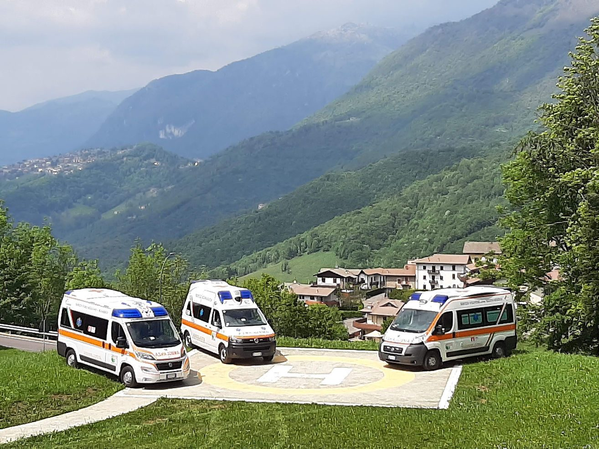
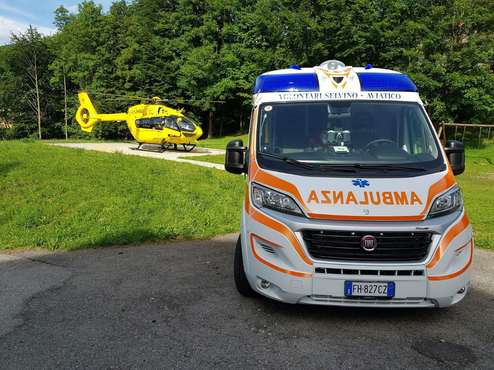
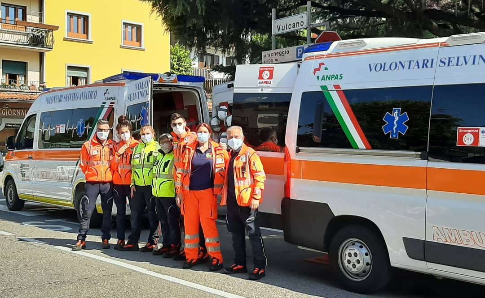
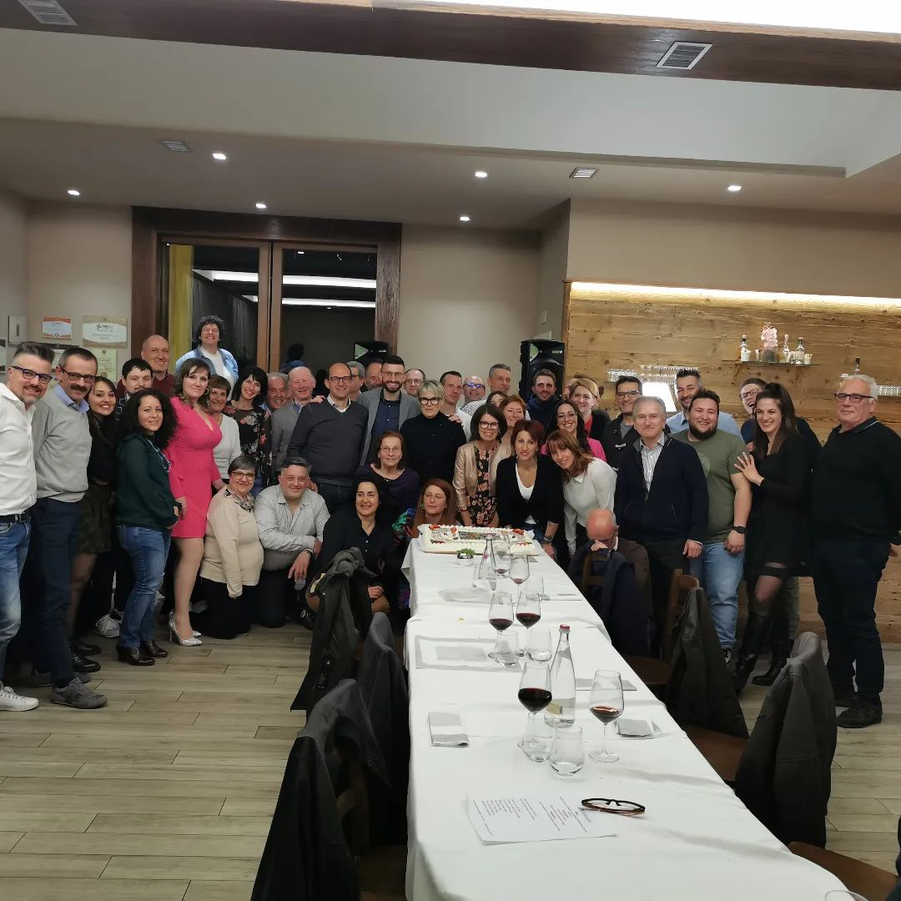
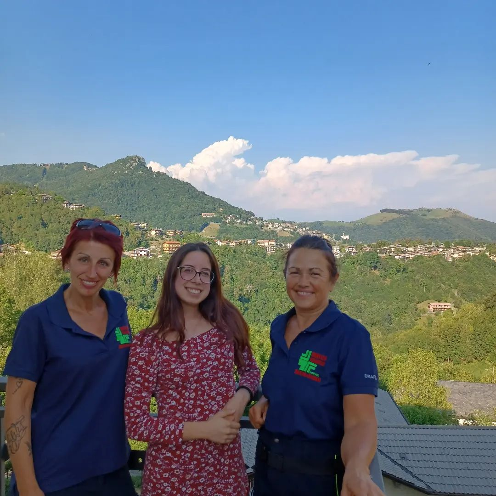

Emergenza 118
Siamo convenzionati con AREU (Agenzia Regionale Emergenza Urgenza) e garantiamo copertura H24 con ambulanze equipaggiate e personale formato per ogni emergenza medica.
Servizio Volontari dell'Altipiano dal 1968
Garantiamo assistenza sanitaria di emergenza H24 sull'Altipiano Selvino-Aviatico, con ambulanze equipaggiate e volontari certificati AREU e ANPAS.
Siamo un'organizzazione laica di volontari che costruisce una società più giusta e solidale, mettendo la persona al centro di ogni intervento.
Radicati nell'Altipiano dal 1968, presidiamo il territorio con passione e conoscenza locale, portando il soccorso anche nelle zone più remote della Val Serina.
Operiamo ogni giorno per garantire sicurezza e assistenza a tutta la comunità dell'Altipiano.
Siamo convenzionati con AREU (Agenzia Regionale Emergenza Urgenza) e garantiamo copertura H24 con ambulanze equipaggiate e personale formato per ogni emergenza medica.
Offriamo servizi di trasporto per pazienti che necessitano di accompagnamento a visite mediche, terapie o strutture ospedaliere, garantendo comfort e sicurezza durante il percorso.
Presidiamo eventi sportivi, sagre, concerti e manifestazioni pubbliche sul territorio, assicurando la presenza di personale qualificato e mezzi di soccorso pronti all'intervento.
L'Associazione Ambulanza Selvino-Aviatico è presente sul territorio da oltre 55 anni, svolgendo attività di soccorso Emergenza-Urgenza e trasporto persone che necessitano supporto.
Le attività dell'Associazione sono rese possibili grazie al prezioso contributo di circa 70 Volontari che ogni giorno mettono a disposizione il loro tempo e le loro competenze per la comunità dell'Altipiano Selvino-Aviatico.
Dal 1995 siamo parte di ANPAS Lombardia, la rete nazionale delle associazioni pubbliche di soccorso che conta oltre 900 organizzazioni in tutta Italia.
Scopri di più →




Seguici anche su Facebook e Instagram per restare aggiornato.

Ogni giovedì di luglio e agosto ci trovi al mercato di Selvino. Scegli uno dei nostri gadget solidali e aiuta a sostenere il nostro impegno per la comunità.

Nel novembre 2023 abbiamo celebrato i 55 anni del servizio ambulanza sull'Altipiano con tutti i soci, volontari e amici storici dell'associazione.

Dal maggio 2023 è attivo il Servizio Civile Universale: 25 ore a settimana per 12 mesi, circa 520€/mese. Valido come esperienza formativa e professionale.
Scopri come candidarti →